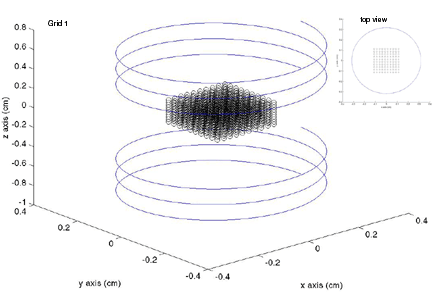
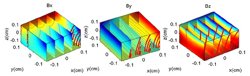
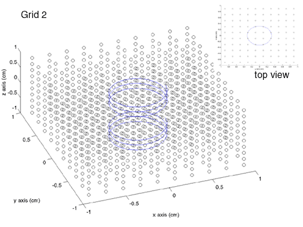
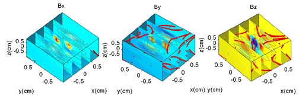

Using the Biot class to calculate the field from a split solonoid
|
Here is the field from a split solonoid. A split solonoid is simply a close view of a true helmholtz pair. The code calculates 2 different views of the field, one is a larger perspective to show the fringe fields, and another to show the field inside the cavity.
There is a Matlab Function called plotmag The plots these figures from the generated matlab files. This file is in the folder 'matlabfunc' in the distribution top directory.
Here is the generated data from the First Grid
- The Grid and coil

- The Magnetic Fields along each axis

- Here is the generated data from the Second Grid
- The Grid and coil

- The Magnetic Fields along each axis

|
//It takes in this as the input file
------------------------truh.sim------------------------
#the coil section we wish to use...
section helmz
#our 'split-solonoid'
helmz{
type truehelmholtz
loops 1
amps 3
numpts 8000
# radius (cm)
R 0.3175
#distance b/w the two coils (cm)
length 1.09
#width between 2 helix layers
layerwidth 0.161
#height between 2 turns in a heliz layer
# if not present will default to layerwidth
layerheight 0.161
#number of helix turns
turns 3
#number of helix layers
numlayers 1
axis z
}
#number of grids to calculate the field over
numGrids 2
#our rectangular grid dimensions
grid1{
min -0.125, -0.125, -0.125
max 0.125, 0.125, 0.125
dim 10, 10, 10
}
#our rectangular grid dimensions
grid2{
min -1, -1, -1
max 1, 1, 1
dim 10, 10, 10
}
------------------------truh.sim------------------------
#include "blochlib.h"
//the required 2 namespaces
using namespace BlochLib;
using namespace std;
//The main runner for calulating magnetic fields
//over grids a set number of grid points
int main(int argc, char **argv)
{
//start MPI
MPIworld.start(argc, argv);
std::string parse="";
int q=1;
//get the parameter file
if(MPIworld.master())
query_parameter(argc, argv, q++, "
Enter Parmeter set file name:", parse);
//distribute the file name to all the nodes
MPIworld.scatter(parse);
//decalare our Parameter set
Parameters pset(parse);
//get the desired coil to calculate the field over
std::string choose=pset.getParamS("section");
//add this section to the parameter set
pset.addSection(choose);
//a typdef to make our grid typing easier
typedef XYZshape<XYZfull> TheGrid;
//get the number of grids we wish to calculate the field over
int numGrids=pset.getParamI("numGrids");
//the grids sectiosn will look like 'grid1', 'grid2'
std::string baseGname="grid";
for(int i=1;i<=numGrids;++i)
{
std::string Gname=baseGname+itost(i);
//add the grid section
pset.addSection(Gname);
//set up our base rectangular grids
Grid<UniformGrid> g1(pset.getParamCoordD("min", Gname),
pset.getParamCoordD("max", Gname),
pset.getParamCoordI("dim", Gname));
//set up thte master shape
TheGrid g2(g1, XYZfull());
//set up our Biot field calculator class
Biot<TheGrid> mycoil(g2,pset, choose);
//set the MPIcontroler to be MPIworld
mycoil.Controller=MPIworld;
//calculate the field
mycoil.calculateField();
//dump out the info to files
if(MPIworld.master()){
mycoil.writeMatlab(pset.getParamS("matout", "params", false, "field"+itost(i)+".mat"));
mycoil.write(pset.getParamS("textout", "params", false, "shape"+itost(i)+".boit"));
}
}
//end out MPI session
MPIworld.end();
}
|